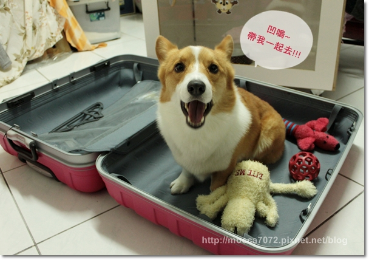
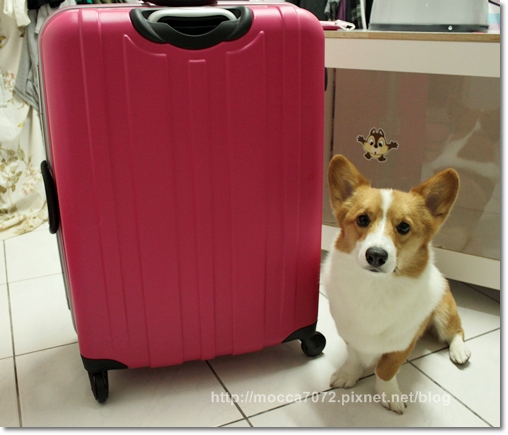
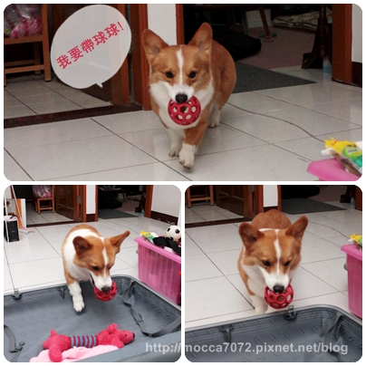
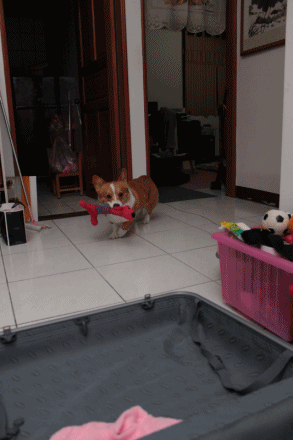
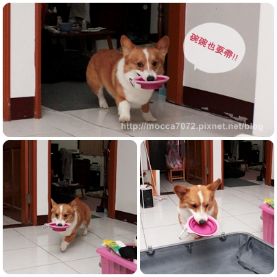
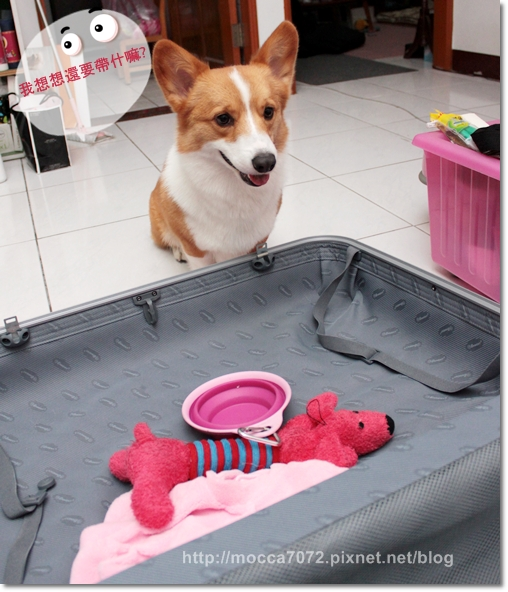
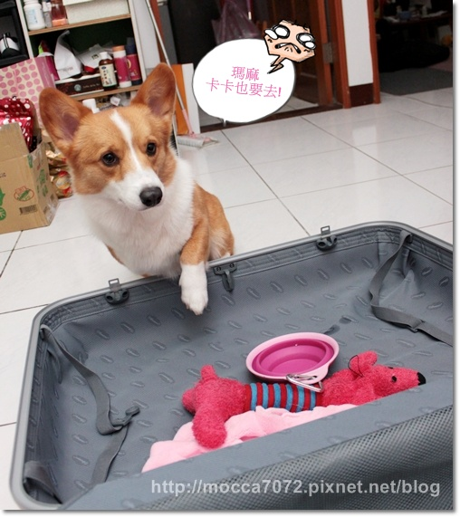
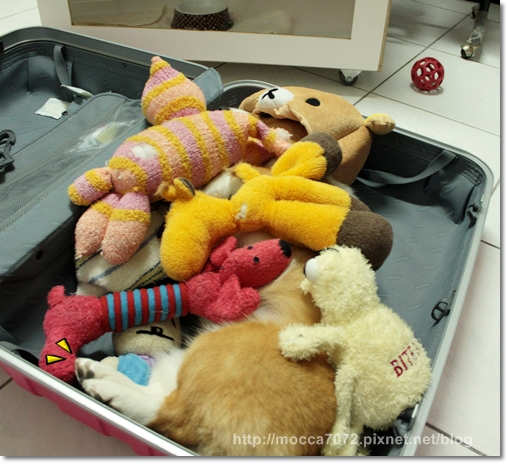
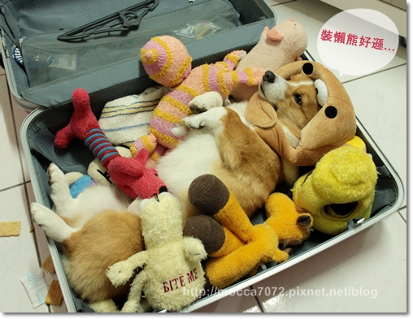
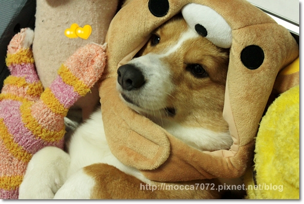

沙哇迪卡～明天我要出發到曼谷自助旅行啦！(轉圈) 
前幾天在收行李時，就開始捨不得留阿卡卡一個人在家
嘖嘖嘖～本來想說時間不長應該還好，想不到我黏TT啊我！
而且我跟卡卡從來沒有分開超過1天
只有上次吃喜酒把卡卡交給卡內麻外帶一晚，隔天就還我惹！

先來看一下我"假掰"的桃紅行李箱，歐！好美～
這次打算去敗個零食山回來，哈哈哈 (好沒出息啊!!出國居然買餅乾 XD)

整理老半天的行李，行李箱是空的，搞屁！
而且為了要翻出帶去的衣服，害我得先把堆成山的衣服收拾一下
亂丟在外頭的衣服比櫃子裡的多好多，我好優秀！
被卡卡發現我要跟他老北偷溜出去玩，自己居然也開始打包？
卡卡：瑪麻，去曼谷可以帶球球嗎？
(你老木是要去敗家的，沒空玩球！ = =!)

卡卡：瑪麻，那帶QQ可以嗎？
(QQ沒有說他要去!! = =!! )

卡卡：那吃飯的碗碗一定要帶！
(泰式料理辣辣你不能吃！！= =!!! )

卡卡：那我想想看還要帶什麼好咧！
(..................... )
)

結果我跟他說：卡卡你不能去！哈哈哈～
居然一副可憐兮兮貌，短短手伸進來是想要自己爬進來裝箱ㄇ？

結果搞了老半天，東西還是沒弄，勁作些白日夢，想辦法偷渡卡卡 ㄎㄎㄎ
卡嚕比偽裝成懶熊，一堆布偶，猜猜看卡卡在那裡？

哦！乖的咧！連眨眼都不敢 (其實他後來睡著了......... )
)
呃...不過他醬躺在箱子裡，又放一堆娃娃，猛哥說感覺怪怪的吶！
呿！呿！呸呸呸

演要演全套的，萬一ㄅ小心被抓包要快點求饒啊！
卡卡：拜託 拜託！鼻要抓我～

如果真的可以把這毛絨絨的傢伙打包帶去該有多好！
我兒子好可愛哦！多拉A夢，借我縮小燈！

這幾天睡覺都緊緊抱著他，哈哈！五天很快就結束，寶貝寶貝要乖乖呦！
至於老木不在的日子，摩卡卡會送去卡ㄋㄟ家安親嘍！
卡內拔麻很會找點帶小狗仔出去玩，所以搞不好這小子行程比我還滿！
那我們就各自好好的玩吧！卡嚕比～哈哈哈 ，又在裝堅強 
希望母子重逢的那刻，可以上演個飛奔相擁而泣的瓊瑤畫面！
卡內拔~記得哦！我每天要跟卡卡視訊！
大家掰掰～希望我的旅行順利，也預祝各位愉快嘍！